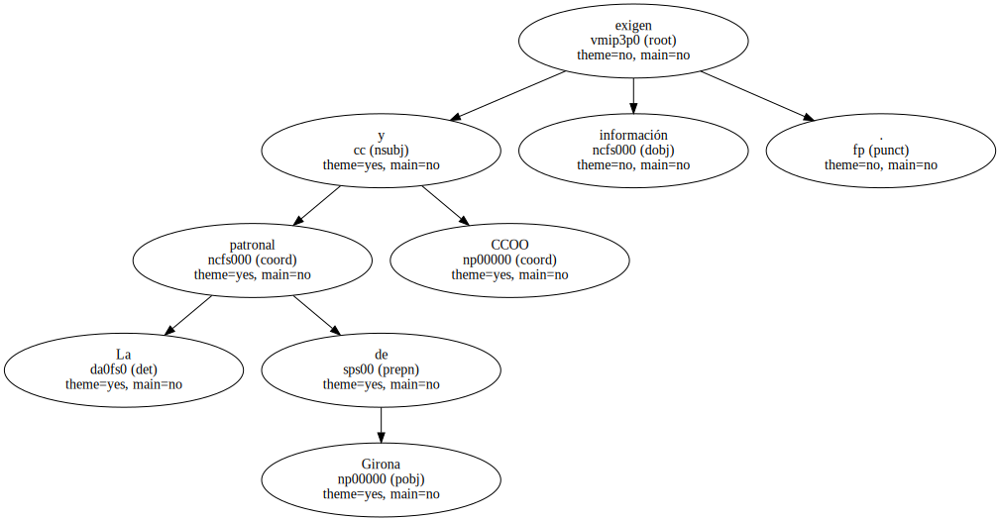
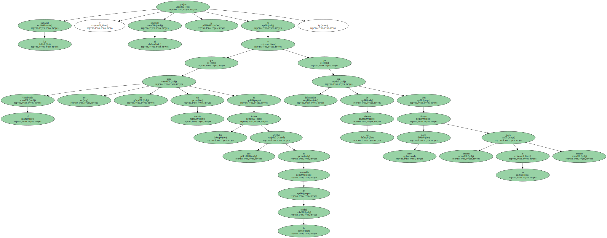

La patronal de Girona y CCOO exigen información.
La Federació d'Organitzacions Empresarials de Girona ( FOEG ) y CCOO han pedido al ayuntamiento de la ciudad ( PSC ) que dote de más recursos al Consell Econòmic i Social , un órgano consultivo del que también forman parte representantes municipales , organizaciones cívicas y sociales.

La patronal y el sindicato se quejan de que el consistorio no les tiene en cuenta en los temas que afectan al desarrollo de la ciudad y que son informados de los mismos con muy poco tiempo para su análisis y estudio.
